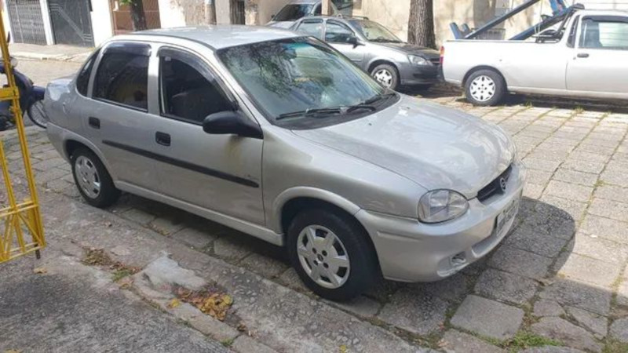
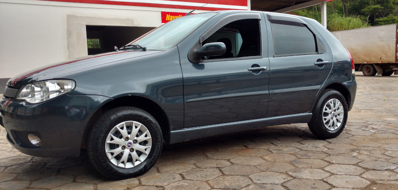

História dos Meus Carros
Lista dos meus carros
Chevrolet Corsa Sedan 1.0 - 2001
Meu primeiro carro foi um Chevrolet Corsa Sedan 1.0, ano 2001. Este meu primeiro carro foi aquele realmente de entrada, o famoso "pé de boi". Adquirir ele antes mesmo de minha primeira habilitação e sem dúvidas, ele me ajudou a conseguir minha habilitação. Tenho um carinho por ele por ter sido meu primeiro carro, mas não muitas saudades 😁.
Eu paguei nele à época R$ 11.000,00, um preço que hoje parece barato, mas que não foi assim tão barato. Ele foi adquirido em 2012, durante o processo de habilitação.
Caractéristicas do Carro - Pontos Negativos
Como um bom carro "pé de boi", este carro era equipado somente com motor, câmbio e carroceria 😁, brincadeiras à parte, este carro não possuía nenhum item de conforto como: ar-condicionado; direção hidráulica; vidros elétricos; chave com telecomando. Nada mesmo! Era realmente o mínimo que se podia esperar de um carro, ruim de manobras em pequenas velocidades, devido não ter nenhuma assistência e ruim de guiar também, se você não tomasse cuidado, perderia o carro de traseira numa curva, além disso, nada de esportividade, seu pequeno motor de 1 litro sofria de potência, dirigi-lo era uma aventura e de fato me ajudou a aprender a conduzir, afinal era no braço mesmo, carro raiz!
Caractéristicas do Carro - Pontos Positivos
Bom, o carro não era de todo ruim assim, devido seu fraco motor, ele era realmente econômico, fazia bons números de consumo, no entanto, não existia qualquer tipo de informações sobre isso, era na "bomba mesmo". Outro ponto positivo do carro, por incrível que pareça, era seu acabamento, por ser um carro de projeto dos anos 1990, possuía as portas forradas com um tipo de tecido que de certa forma apresentava um certo requinte ao carro. Era sóbrio sem muitas extravagâncias. Outro ponto positivo era sua cor, prata, que de certa forma "esconde a sujeira" principalmente para quem reside em cidade pequena como eu...
Ficha técnica
| Item | Dados |
|---|---|
| Combustível | Gasolina |
| Configuração | Sedã |
| Porte | Compacto |
| Cilindrada | 999 |
| Aspiração | Natural |
| Potência Máxima | 60 cv a 6000rpm |
| Torque Máximo | 8,3 kgfm a 3000rmp |
| Transmissão | Manua de 5 Marchas |
| Direção | Não assistida |
| Velocidade Máxima | 155 km/h |
| Consumo | 11,3 km/l |
Outras Fotos do Carro
Avaliação em Vídeo do Carro
Fiat Pálio ELX 1.0 - 2005
Este é aquele típico carro que você acha que está fazendo um grande negócio, mas no fundo é uma verdadeira furada. Sofri bastante com o carro, embora ele tenha me atendido bem.
Este carro, adquirir em uma troca, no ano de 2013, fiquei pouco tempo com o Corsa e ja fui para o Pálio. Ele me custou R$ 15.000,00
Caractéristicas do Carro - Pontos Negativos
O primeiro problema deste carro, que parecia um bom negócio era sua quilometragem baixa, quando comprei ele, tinha apenas 46000 km, parece pouco, e de fato, se considerarmos o ano de fabricação (2005) com oito anos de uso, ele rodou uma média de 5750 km/ano ou 479,16 km/mês, muito pouco não acha? Isso se refletiu em seu desempenho, sofrível. O carro não andava nada, muito fraco inclusive em vias planas, sofri com ele... Além disso, tina apenas vidros elétricos nas portas dianteiras e não possuía ar-condicionado, somado a sua cor, um tom de verde escuro, esquentava bastante.
Caractéristicas do Carro - Pontos Positivos
Como pontos positivos do carro, temos um bom acabamento interno, com poucas rebarbas, forros de porta revestidos com um couro sintético. Seu painel era um show a parte, muito bem construído e com um computador de bordo de dar inveja a muito carro novo de hoje. Além disso, como possuía um motor 1.0, seu consumo era muito bom, gastava pouquíssimo. Não podemos deixar de destacar também seu design, realmente um carro muito bonito. Gostei bastante dele, apesar do desempenho.
Ficha Técnica
| Item | Dados |
|---|---|
| Combustível | Gasolina |
| Configuração | Hatch |
| Porte | Compacto |
| Cilindrada | 999 |
| Aspiração | Natural |
| Potência Máxima | 65 cv a 6250rpm |
| Torque Máximo | 9,1 kgfm a 3000rmp |
| Transmissão | Manua de 5 Marchas |
| Direção | Hidraulica |
| Velocidade Máxima | 154 km/h |
| Consumo | 12,9 km/l |